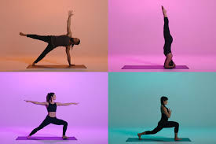

Resources & Solutions
Organizations that offer healthcare:
- National Multiple Sclerosis
- Unity Health Care.
- Kaiser Family Foundation.
- Center For Health & Gender.
Insurance providers for low income families:
Insurance Quotes
Obamacareusa
In case of emergency, instead of going to the hospital or calling an abulance, go to an urgent care facility. They offer simialr immediate response attention to ailments and opperate outside of the government instituted healthcare system. Below are urgentcare locations near you. URGENT CARE API BELOW!!!
Maintain your health without going through the healthcare system:
Alternative homeopathic remedies:
osteopathic manipulative therapy (OMT)

Qi gong (internal and external Qiging)

reflexology

Reiki

spiritual healing

traditional Chinese Medicine(TCM)

yoga

acupuncture

Alexander technique

aromatherapy

Ayurveda (Ayurvedic medicine)

biofeedback

chiropractic medicine

diet therapy

herbalism

holistic nursing
homeopathy

hypnosis
massage therapy

meditation

naturopathy

nutritional therapy